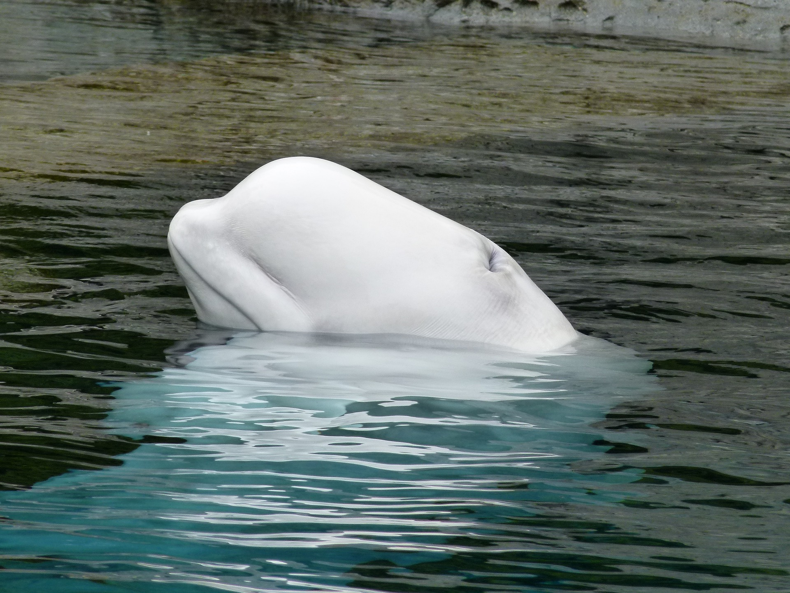
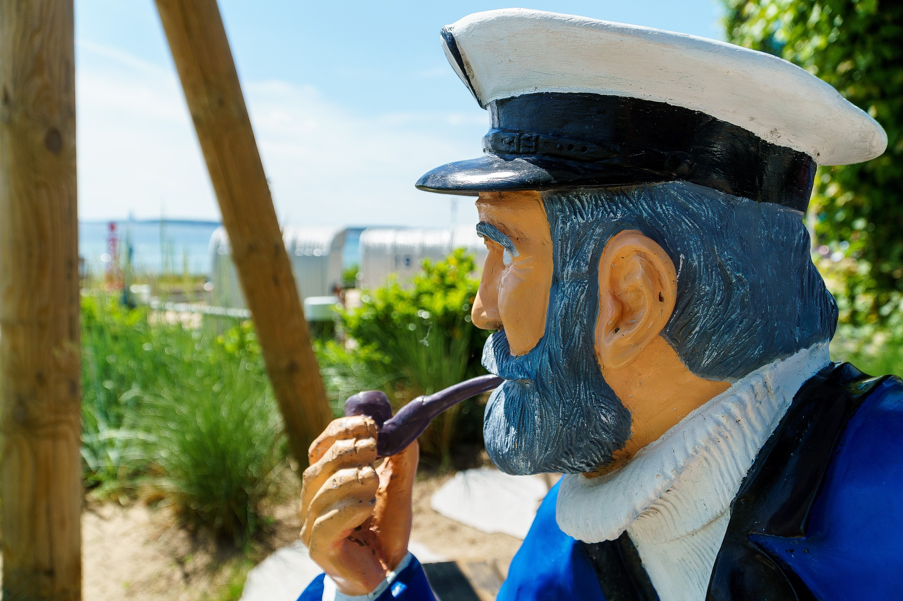

Beluga dans la seine
Un énorme MERCI à toutes celles et ceux qui nous envoient des encouragements et des mots de soutien, ils nous vont droit au cœur et soutiennent le moral de nos équipes...

Le saviez-vous ?
La pêche illégale représente environ 11 à 26 millions de tonnes de la capture annuelle de poisson dans le monde

Le saviez-vous ?
Les baleines à bosse communiquent avec des chants complexes qui peuvent être aussi forts que le son d’un avion à réaction d’environ 150 décibels

Le saviez-vous ?
12 à 15 millions de tonnes de plastique se retrouvent dans l’océan chaque année, tuant un million d’oiseaux de mer et 100 000 animaux marins.

Eclaircissement sur la démission du capitaine Paul Watson de Sea Sheperd USA
Le capitaine Paul Watson, Fondateur de Sea Shepherd, a récemment publié sa lettre de démission de l'antenne nationale de Sea Shepherd aux États-Unis. Dans sa lettre (à....